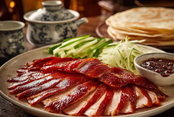

Un symbole emblématique de la gastronomie de Beijing

Le Peking Duck est l’un des plats les plus célèbres de la cuisine chinoise. Son origine remonte à la dynastie Yuan, et il est devenu particulièrement célèbre sous les dynasties Ming et Qing. À cette époque, il était servi à la cour impériale de Beijing. Aujourd’hui, ce plat est considéré comme un symbole de la gastronomie chinoise et attire de nombreux visiteurs étrangers.
La préparation du Peking Duck est très raffinée. On utilise généralement un canard spécialement élevé. Le canard est d’abord gonflé avec de l’air pour séparer la peau de la chair, puis enduit d’un sirop sucré avant d’être suspendu et séché. Ensuite, il est rôti dans un four traditionnel. Cette méthode permet d’obtenir une peau très croustillante et une viande tendre et juteuse.
Le Peking Duck est souvent servi en fines tranches. On le mange généralement avec des crêpes fines, de la sauce sucrée appelée Hoisin Sauce, ainsi que des oignons verts et parfois du concombre. Les convives enveloppent les ingrédients dans la crêpe pour former un petit rouleau, ce qui donne une combinaison équilibrée de saveurs et de textures.